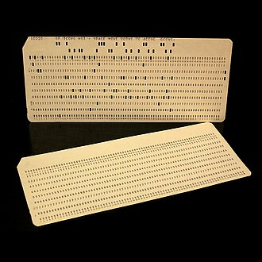

Architecture & Operating Systems
A pile of transistors does nothing on its own. This floor decides how the machine is organised — how it stores a program and runs it — and the operating system that shares one computer fairly between every app, game and download running at once.
⚙️ What this floor is
Floor 3 has two halves. Architecture is the blueprint of the machine: how the processor, memory and instructions fit together. The operating system (Windows, macOS, Android, Linux) is the manager that sits between the hardware and your apps — handing out processor time, parcelling out memory, and stopping one misbehaving program from taking down the whole device.
The big ideas
📐 1. The stored-program idea (von Neumann)
Early computers were rewired by hand for each new task. In 1945, a report associated with John von NeumannMathematician whose 1945 "First Draft of a Report on the EDVAC" described the stored-program computer — the design nearly every computer still uses. set out the **stored-program** idea: keep the instructions in the same memory as the data.
Imagine a **kitchen** where recipes (the instructions) and the ingredients (the data) are kept in the exact same pantry cabinets. Before this, changing a program meant physically replugging cables and rerouting wires — like tearing down the kitchen walls and rebuilding the plumbing just to bake a different cake!
Installing an app instead of rebuilding your phone is the stored-program idea in action: the hardware stays the same, you just load new instructions into memory.


🧩 2. One design, many machines (the architecture family)
On 7 April 1964, IBM announced the System/360A family of computers, from small to large, that all ran the same instruction set — so one program could run across the whole range. A landmark in computer architecture.: a whole family of computers, cheap to huge, that all spoke the same instruction set. Software written for one could run on any of them. This separated the architecture (the rules a program sees) from the hardware (the specific machine) — an idea that still governs how chips are designed.
The same app running on a cheap phone and a flagship phone — because both share an instruction set (today, usually "ARM") — is the System/360 idea, sixty years on.

Every earlier IBM model needed its own programs. A business that outgrew its computer had to throw away all its software and start over.
One compatible architecture — small to huge — so software and staff skills carried across the whole range. It defined what "computer architecture" means.
🧑✈️ 3. The traffic controller (the operating system)
Your device runs dozens of programs at once, yet none of them freezes the others. That is the operating system's job. Think of the OS as a **school playground monitor** or a **traffic cop**. It divides up playground time (CPU slices), makes sure kids don't paint over each other's chalk drawings (memory isolation), and prevents crashes when one program behaves badly.
Unix (born at Bell Labs in 1969) set the template; Linux (started by Linus Torvalds in 1991) became the free version that now runs most of the world's servers, almost every Android phone, and the data centres where AI is trained.
GPUs only became useful for AI because of a software layer that lets ordinary programs command thousands of GPU cores: NVIDIA's CUDA, released in 2007. After 2017, this floor was reorganised around keeping GPUs fed — fast memory, schedulers and drivers all redesigned so the expensive parallel hardware never sits idle.

Their previous operating system, Multics, had grown so big and complex it was barely usable. They wanted something two people could actually run (and play a game on).
Unix — small, made of simple tools, and soon portable between machines. Its design still shapes nearly every operating system today.
Before code becomes fancy buttons, it gets chopped into tiny instructions for the CPU. Can you trace what these 3 instructions do in order? (We start with the number 5 saved in Memory Address A).
- 📥 LOAD A: Copy the number from memory Address A (
5) into the CPU's temporary pocket. - ➕ ADD 3: Add
3to the number in the CPU's temporary pocket (pocket now holds8). - 📤 STORE B: Take the number in the pocket (
8) and write it down in memory Address B.
You just ran an assembly program! A CPU does this exact loop (Fetch instruction → Run it → Write it) billions of times per second.
How this floor evolved
One job at a time
Early machines ran a single program and were rewired or reloaded by hand. A crash could mean starting over completely.
Hundreds of isolated tasks
Modern operating systems juggle hundreds of programs and containers safely, virtualising memory so one bad app can't freeze the machine.
Built around accelerators
Systems are increasingly designed around GPUs and AI accelerators, not the CPU — a quiet but deep re-architecting driven by 2017.
The von Neumann report describes keeping instructions and data together in memory — the architecture nearly every computer still uses.
A family of compatible computers sharing one instruction set, separating architecture from hardware. One of the most influential designs in computing history.
Unix (1969) defines the modern operating system; Linux (1991) makes it free and open, and goes on to run most servers, Android, and the AI data centre.
NVIDIA's CUDA lets ordinary code run on thousands of GPU cores — the bridge that, ten years later, let the Transformer run at scale.
⚡ This floor's role in the 2017 cascade
Floor 3 re-organised the machine around parallelism. Once AI meant feeding thousands of GPU cores, operating systems and architectures had to change: high-bandwidth memory, GPU-aware schedulers, and software like CUDA became the centre of gravity instead of the CPU. The manager of the computer quietly switched whom it was managing for.